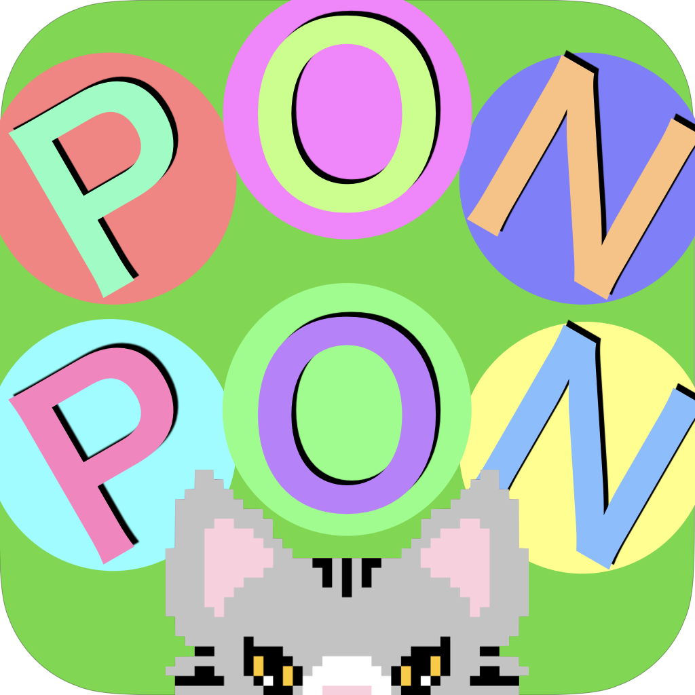

ぽんぽん巻き図制作支援アプリ
PONPON模様はぽんぽんの巻き図を簡単に作ることのできるアプリです
一般の本では既存の巻き図しか載っておらずオリジナルのぽんぽんを作ることは困難ですが、このアプリはオリジナルのぽんぽんを誰でも簡単に作ることができます。
「WISS 2020: 第28回インタラクティブシステムとソフトウェアに関するワークショップ」に論文を投稿しました
PONPON模様
PONPON模様はぽんぽんの巻き図を簡単に作ることのできるアプリです
ぽんぽん巻き図制作支援アプリ
一般の本では既存の巻き図しか載っておらずオリジナルのぽんぽんを作ることは困難ですが、このアプリはオリジナルのぽんぽんを誰でも簡単に作ることができます。

「WISS 2020:
第28回インタラクティブシステムとソフトウェアに関するワークショップ」に論文を投稿しました